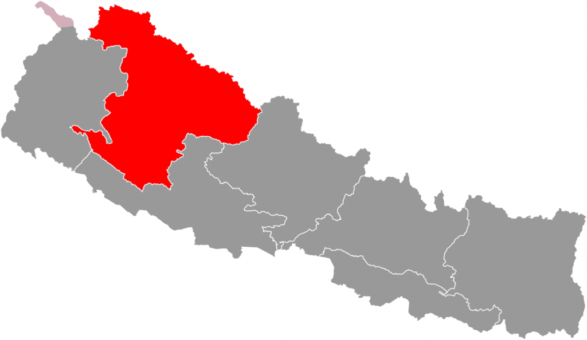

BACKGROUNDNestled in the Karnali Province of Nepal, particularly in the Sija River area of Jumla district, lies a region regarded as one of the world's oldest examples of natural beauty, cultural heritage, artistic prowess, and craftsmanship. This area is rich in history, encompassing temples, literature, language, art, architecture, sculpture, and folk traditions.
Historically, this region was once a prosperous and advanced kingdom, but today it stands as a distinct part of Nepal. Known as the "Golden Land of the Khas Mandal," it stretches from the Trishuli River westward.

Due to climate change, cooler regions like Sija valley are gaining popularity. The area's climate varies significantly by season. In winter (December–January), temperatures range is from -5°C to -8°C, with snow covering the hills, mountains, and valleys. Despite the cold, the local community remains well-adapted to the conditions.
Spring (March–April) brings moderate temperatures of 18°C to 25°C. During this time, apple trees blossom and other flowering trees bloom, creating a picturesque and


They visitors are also taken on a tour of the Comprehensive Enterprise Development project in the evening. This initiative aims to promote sustainable livelihood of local community and also to contribute to contribute to the socioeconomic growth of the region by providing employment opportunities for the local communities while preserving and showcasing the region's natural and cultural heritage.

STUDY AND OBSERVATION TRIP 2082
Day 1: Visit the birthplace of the Khas Arya civilization – a) the capital of the ancient Sija Kingdom at Lamatada where King Nagraj ruled, b) the temple of Kanaka Sundari, c) the Pandav Cave where Draupadi and the five Pandavas stayed,
Day 2: Tour of the Himalayan trekking rout that leads to Kailash and Mansarovar, the snowmelt river flowing from the melting snow, the Marsi rice fields, traditional houses built from local stone and wooden logs;tour of villages, interact with people local attire, and clothes made from local materials produced since ancient times, handicrafts, and wooden products such as beds, storage containers, chests, kitchen items, all representthe local culture. Visitors will also observe animals like cows, horses, sheep, and goats, and experience local agriculture, with crops such as millet, wheat, maize, barley, and rice. Additionally, they will get to observe the cultivation and tasting of fruits such as apricots, walnuts, and apples, and witness the blossoming scenery.For both internal and external tourists, there will be a two-day experience of sightseeing within 50 kilometers of Sija civilization, including scenic nature hikes, swimming, cycling, and playing sports like volleyball, football, and running. Tourists will also enjoy local cultural activities, such as Deuda dance, Bhari game, Hudke dance, and other traditional games.
Day 3: On the third day, there will be a visit and observation of Rara Lake, Nepal’s largest and highest lake, allowing for natural and cultural interactions. Afterward, tourists will be taken to the YarsaGumbo collection festival destination by helicopter, where they will meet communities involved in collecting Yarsa Gumba at an altitude of 3,500 to 4,600 meters. They will receive training, exchange experiences, and play games such as running, kabaddi, and volleyball. The evening will conclude with local Lama and Bhote dances, followed by a return helicopter trip to the designated base. This destination is set to become a global example, and the tour will be extended by 2 additional days, making the entire journey 6 days long.
ESTIMATED COSTS FOR THE FESTIVALTOUR PACKAGES:
Package 1. For a 6-day helicopter tour with meals, stay, and sightseeing: NPR 1,200,000 / $8,862.22 per person. (Professional travel agency will be doing bookings to cater the needs of international tourists).
Package 2.: For a 4-day tour from Rara Lake to Sija Civilization with meals, stay, and sightseeing: NPR 600,000 /$4,431.11 per person. (Our agent will be doing the bookings for both internal and external tourists).
(Media Advertising Partner: Samriddhi Media Bigyapan Agency)
Contact Information: Bank Detail:
Ntaking ame: Purna Prasad Achary Account Name: Samriddhi Media Bigyapan Agency
Contact Number: +977-9849026919 Account Number: 21700110638550000001
Kantipath-Branch, Kathmandu